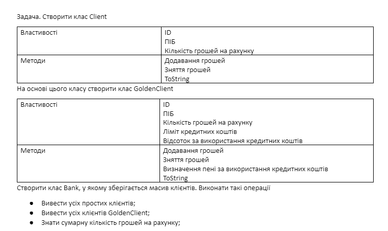

Задача 1

к задачеЗадача 2
Розробити Класи
House
--- властивості ---
Координата Х
Координата У
шлях до зображення
інтервал оновлення
--- методи ---
генерування елемента розмітки
оновлення через вказаний інтервал (збільшення або зменшення масштабу (об’єкт не рухається)
Bird
--- властивості ---
Координата Х
Координата У
шлях до зображення
інтервал оновлення
--- методи ---
генерування елемента розмітки
оновлення через вказаний інтервал (випадкове зміщення по горизонталі (зміна координати Х))
Dog
--- властивості ---
Координата Х
Координата У
шлях до зображення
інтервал оновлення
--- методи ---
генерування елемента розмітки
оновлення через вказаний інтервал (випадкове переміщення у довільному напрямку)
Подумайте яким має бути спільний клас предок.
Задача 3
Користувач задає місяць навчання учня (перевіряти чи є числом, чи від 1 до 12, чи не канікули) та оцінку (перевіряти чи є числом, чи від 1 до 100). Вивести чи зможе він виправити оцінку (якщо оцінка погана і це не останній місяць у семестрі). Обробку усіх помилок зробити з використанням відповідних класів.
к задаче